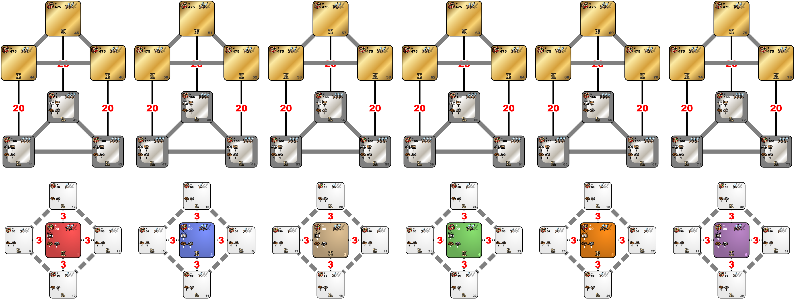

Fight on water for the control of the Treasure Islands
Early on, you have to go sailing if you want any Rare Resources at all.
By Warzyw
Last update: 01.02.2024

Settings
Technical datails about the Template Pack that you can get from the Template Editor (scroll down for graphs)
| Index | Zones | Min | Max | Density | Min | Max | Density | Min | Max | Density |
|---|---|---|---|---|---|---|---|---|---|---|
| 56 | White zones | 6000 | 8000 | 3 | 3000 | 5000 | 6 | 500 | 2000 | 9 |
| 90 | Starting zones | 6000 | 8000 | 9 | 3000 | 5000 | 6 | 500 | 2000 | 3 |
| 166 | Silver zones | 15000 | 25000 | 2 | 10000 | 15000 | 5 | 6000 | 10000 | 8 |
| 475 | Golden zones | 60000 | 80000 | 2 | 30000 | 40000 | 5 | 15000 | 25000 | 8 |
| Zone | Terrain |
|---|---|
| 1, 2, 3, 4, 5, 6, 41, 42, 43, 47, 48, 49, 53, 54, 55, 59, 60, 61, 65, 66, 67, 71, 72, 73 | Same as Town |
| White zones | Sand |
| Golden zones | All allowed |
| Zone | Town rules |
|---|---|
| 41, 42, 43 | towns have same type as player towns of zone 1 |
| 47, 48, 49 | towns have same type as player towns of zone 2 |
| 53, 54, 55 | towns have same type as player towns of zone 3 |
| 59, 60, 61 | towns have same type as player towns of zone 4 |
| 65, 66, 67 | towns have same type as player towns of zone 5 |
| 71, 72, 73 | towns have same type as player towns of zone 6 |
| Rule Type | Object | Value | Frequency | Max per Zone | Max on Map |
|---|---|---|---|---|---|
| Disable | Mermaids | ||||
| Disable | Buoy | ||||
| Disable | Flotsam | ||||
| Disable | Jetsam | ||||
| Disable | Fountain of Youth | ||||
| Enable / Edit | Beholders' Sanctuary | 10000 | default | default | default |
| Disable | Temple of the Sea | ||||
| Disable | Shipwreck | ||||
| Disable | Derelict Ship | ||||
| Enable / Edit | Vial of Mana | default | default | default | default |
| Enable / Edit | Sea Barrel | 750 | default | default | default |
| Enable / Edit | Sea Chest | 500 | 1 | no limit | no limit |
| Disable | any of Wood/Ore/Mercury/Sulfur/Crystal/Gem/Gold | ||||
| Disable | Random Resource | ||||
| Disable | Campfire | ||||
| Enable / Edit | Observation Tower | 3000 | 10 | default | default |
| Disable | Shipwreck Survivor | ||||
| Disable | Shrine of Magic Incantation (Level 1) | ||||
| Disable | Shrine of Magic Gesture (Level 2) | ||||
| Disable | Shrine of Magic Thought (Level 3) | ||||
| Enable / Edit | Spell Scroll — Level 1 | default | 50 | no limit | no limit |
| Enable / Edit | Spell Scroll — Level 2 | default | 50 | no limit | no limit |
| Enable / Edit | Spell Scroll — Level 3 | default | 50 | no limit | no limit |
| Enable / Edit | Altar of Mana | 3000 | 10 | default | default |
| Disable | Trading Post | ||||
| Enable / Edit | Sirens | 750 | default | default | default |
| Rule Type | Object | Value | Frequency | Max per Zone |
|---|---|---|---|---|
| Enable / Edit | Random Relic | 1000 | 80 | default |
| Disable | any creature bank | |||
| Enable / Edit | Ivory Tower | default | default | default |
| Disable | Windmill | |||
| Disable | Mystical Garden | |||
| Disable | Prospector | |||
| Disable | Wagon | |||
| Disable | Lean To | |||
| Disable | any warehouse | |||
| Disable | Spell Scroll — Level 4 | |||
| Disable | (Level 4) | |||
| Disable | Quest artifact for Seer's Hut of any kind | |||
| Disable | Pandora's Box with creatures of any kind | |||
| Disable | Pandora's Box with spells — any kind | |||
| Disable | Pandora's Box with gold — any amount |
| Rule Type | Object | Value | Frequency | Max per Zone |
|---|---|---|---|---|
| Disable | Pandora's Box of any kind | |||
| Enable / Edit | Quest artifact for Seer's Hut with creatures of level 1 | default | 100 | default |
| Enable / Edit | Quest artifact for Seer's Hut with creatures of level 2 | default | 100 | default |
| Enable / Edit | Quest artifact for Seer's Hut with creatures of level 3 | default | 100 | default |
| Enable / Edit | Quest artifact for Seer's Hut with creatures of level 4 | default | 100 | default |
| Enable / Edit | Quest artifact for Seer's Hut with creatures of level 5 | default | 100 | default |
| Enable / Edit | Quest artifact for Seer's Hut with creatures of level 6 | default | 100 | default |
| Enable / Edit | Quest artifact for Seer's Hut with creatures of level 7 | default | 100 | default |
| Disable | Quest artifact for Seer's Hut with experience — any amount | |||
| Disable | Quest artifact for Seer's Hut with gold — any amount | |||
| Enable / Edit | Random Relic | 1000 | 100 | default |
| Enable / Edit | Griffin Conservatory | 20000 | 150 | default |
| Enable / Edit | Experimental Shop | 20000 | 100 | default |
| Enable / Edit | Random Major Artifact | 20000 | default | default |
| Enable / Edit | Random Minor Artifact | 10000 | default | default |
| Rule Type | Object | Value | Frequency | Max per Zone |
|---|---|---|---|---|
| Disable | Pandora's Box of any kind | |||
| Disable | Quest artifact for Seer's Hut of any kind | |||
| Enable / Edit | Random Relic | 1000 | 100 | default |
| Enable / Edit | Griffin Conservatory | 20000 | 150 | default |
| Enable / Edit | Experimental Shop | 20000 | 100 | default |
| Enable / Edit | Random Major Artifact | 20000 | default | default |
| Enable / Edit | Random Minor Artifact | 10000 | default | default |